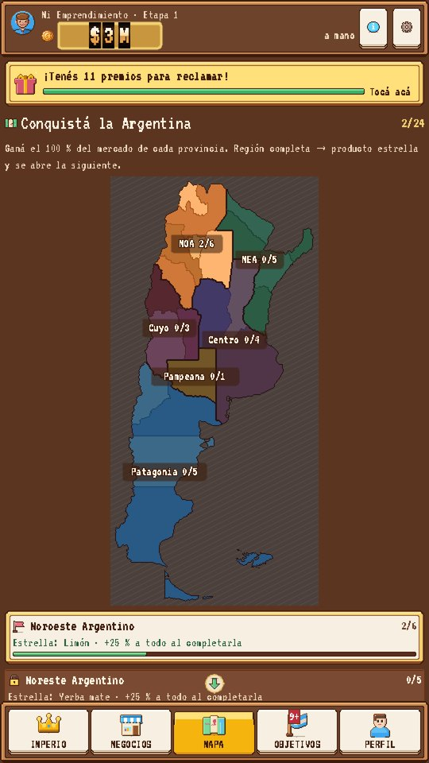

Armá tu imperio de negocios y conquistá la Argentina, provincia por provincia. Un juego de simulación con todo el folclore argentino: inflación, juicios, asaltos a chancletazos y coimas en la comisaría.



El juego
- Abrí negocios de cada región, contratá empleados y mejoralos.
- Conquistá las 24 provincias compitiendo contra rivales.
- Defendé tu local de los asaltos y arreglá con la comisaría antes de la multa.
- Sumá amigos, competí en el ranking y convidales un mate.
- Se puede jugar entero como invitado, sin cuenta.
Ayuda y contacto
Escribinos a facundo.n.defagot@gmail.com por dudas, errores o para pedir el borrado de tus datos.